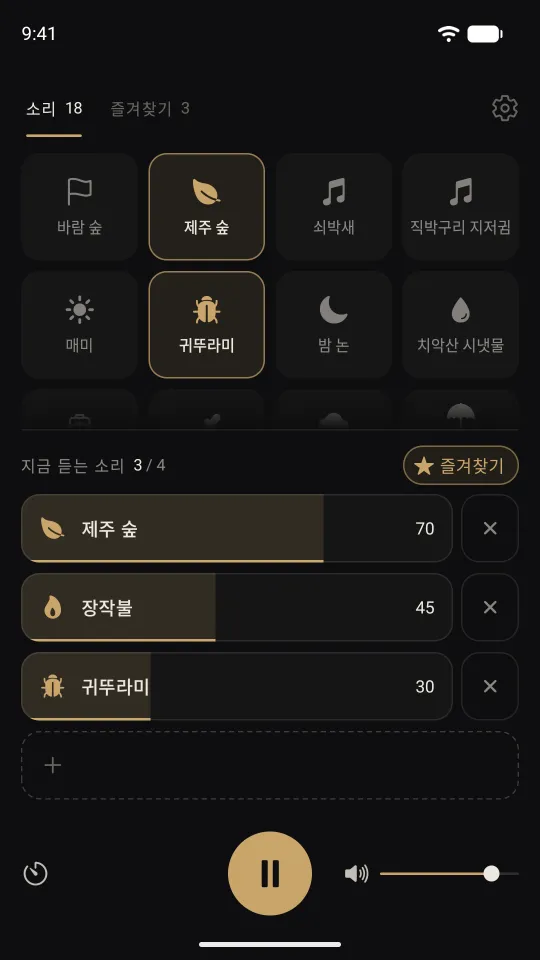
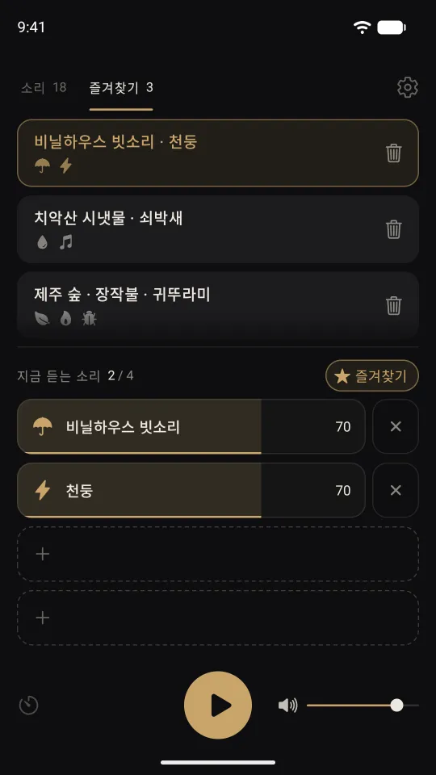
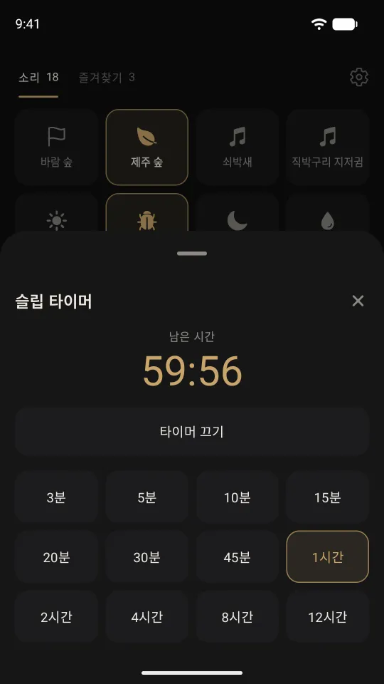
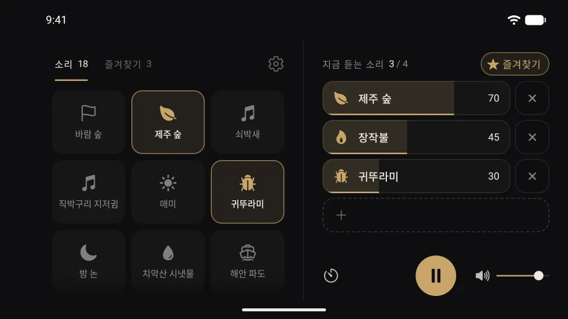

사라락
집중과 휴식을 위한 소리
빗소리, 숲, 파도, 장작불, 붐비는 카페까지. 듣고 싶은 소리를 4개까지 골라 나만의 배경 소리를 만드세요. 소리마다 볼륨을 맞추고, 끊김 없이 계속 틀어 둘 수 있습니다.
App Store · Google Play 출시 예정

이럴 때 틀어 두세요
백색소음처럼 배경에 깔아 두는 소리입니다. 조용한 곳이 어색할 때, 주변 소리 대신 듣고 싶은 소리를 고르세요.
- 공부할 때
- 일에 집중할 때
- 책을 읽을 때
- 잠들기 전
- 명상할 때
- 쉬는 시간
18가지 소리
모든 소리가 앱에 들어 있어 인터넷 연결 없이 재생됩니다.
비와 물
- 숲속 비
- 비닐하우스 빗소리
- 천둥
- 시냇물
- 해안 파도
- 동굴 물방울
숲과 생물
- 숲 2가지
- 매미
- 귀뚜라미
- 밤 논
- 쇠박새
- 직박구리 지저귐
불, 도시, 소음
- 장작불
- 붐비는 카페
- 도심 거리
- 비행기
- 갈색 소음 (브라운 노이즈)
기능
4개까지 섞어 듣기
- 소리를 4개까지 골라 함께 재생합니다.
- 소리마다, 그리고 전체 볼륨을 따로 조절합니다.
- 소리가 끊김 없이 반복됩니다.
- 앱을 나가거나 화면이 꺼져도 계속 재생됩니다. 잠금 화면에서 재생·일시정지할 수 있습니다.
즐겨찾기
- 마음에 드는 조합을 5개까지 저장합니다.
- 한 번 눌러 저장한 조합으로 바꿉니다.
- 앱을 다시 열면 마지막 조합을 불러옵니다.

슬립 타이머
- 3분에서 12시간 뒤에 재생을 멈춥니다.
- 남은 시간을 언제든 확인하고 끌 수 있습니다.

가로 화면과 큰 화면
- 휴대폰을 가로로 돌리면 소리 목록과 믹서가 나란히 보입니다.
- Android 태블릿과 펼친 폴더블에서도 나란히 보이고, 테이블탑 자세에서는 접는 선 위에 소리 목록, 아래에 믹서가 놓입니다.

자주 묻는 질문
- 인터넷 연결이 필요한가요?
- 아니요. 모든 소리가 앱에 들어 있어 비행기 모드에서도 재생됩니다.
- 어떤 기기에서 쓸 수 있나요?
- iOS 26 이상의 iPhone, Android 13 이상의 휴대폰·태블릿·폴더블에서 쓸 수 있습니다.
- 다른 앱을 쓰는 동안에도 재생되나요?
- 앱을 나가거나 화면이 꺼져도 계속 재생됩니다. 다만 다른 앱이 소리를 내면(동영상, 음악, 통화 등) 사라락은 멈춥니다.
- 한 번에 몇 개까지 섞을 수 있나요?
- 4개까지입니다. 소리마다 볼륨을 따로 맞출 수 있습니다.
- 가입해야 하나요?
- 아니요. 즐겨찾기와 마지막 조합은 기기에만 저장됩니다. 자세한 내용은 개인정보처리방침에 있습니다.
문의
문제나 의견이 있으면 메일로 보내 주세요: team.plan275@gmail.com